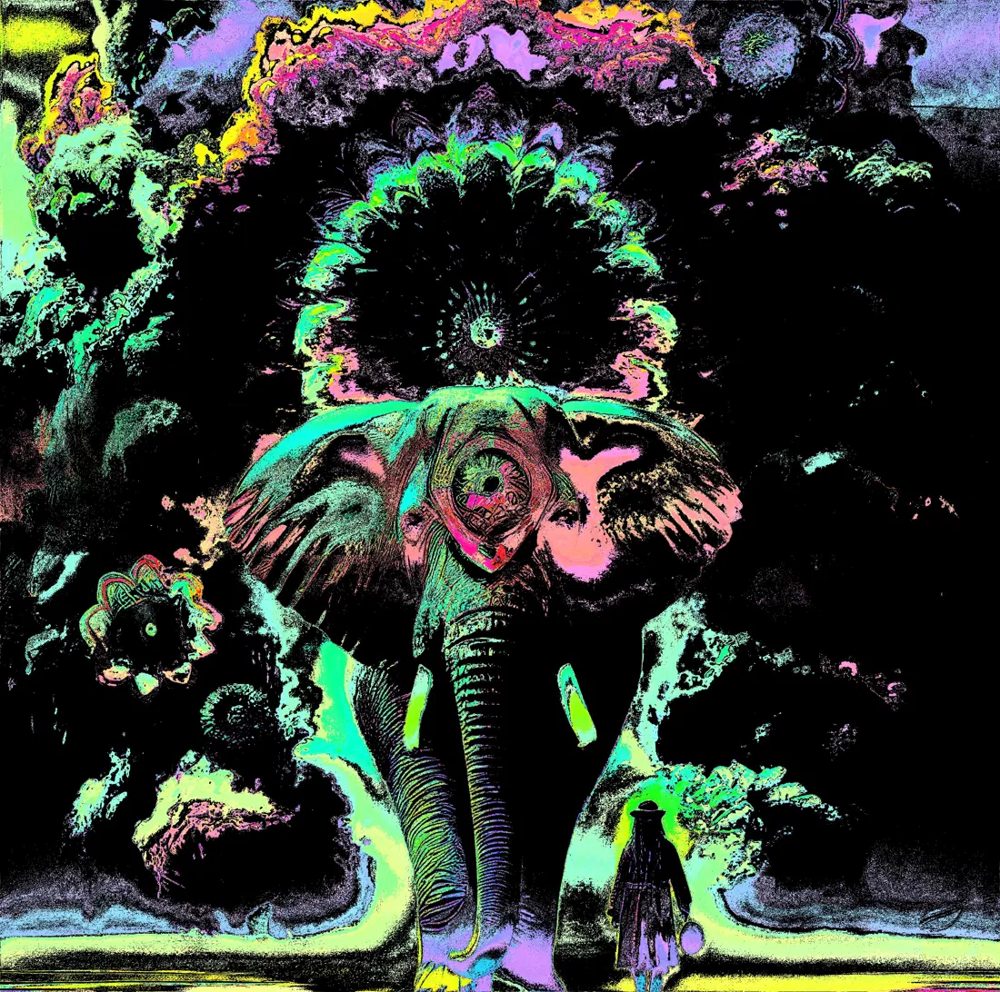

PACHYDERMIS — PHISH EDITION INKED
COLLECTION: SURREALISM
If the Phish Edition is overexposure — all light, all wash, all softness — the Inked Edition is the negative: deep black background, every form rendered only in its neon outline, the elephant a ghost of teal and pink edge detection against the void. The cloud crown above has become a dark aurora, its fractal shapes now visible only where the edge detection has found a boundary and lit it in green or pink or yellow. The lone figure at the lower right stands in a small pool of neon green, barely distinguishable from the dark around it. This is the same scene experienced at the opposite end of the light spectrum — which, taken together with the original and the Phish Edition, makes Pachydermis a triptych with a full range of emotional states. Noon, dawn, and midnight. Three ways of standing before something enormous and trying to process what you're seeing.